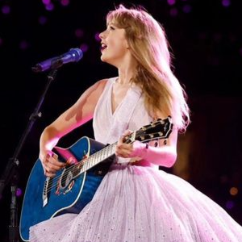

Todo lo que necesitas saber de "Taylor Swift"
La madre de Taylor Swift, Andrea Swift, piensa en ella desde muy pequeña como una niña solitaria y creativa que se expresa en canciones y poemas,
algo que podemos ver desde sus inicios en su album Debut llamado "Taylor Swift"(2006) album de ascendencia country (algo que la acompañara mucho,
teniendo en cuenta que se mudo a Nashville, Tennesse la llamada cuna del country para producir sus canciones teniendo tan solo doce años)
Asi, ella comenzara a tocar en restourantes y festivales pequeños de menos de treinta personas sus canciones de amor y esperanzas .
En uno de estos recitales, un ejecutivo de DreamWorks llamado Scoot Brocheta la escucho y le ofecio un contrato en Big Machine Records y
asi nace su disco debut a sus tan solo diesies años. Este album a pesar de ser su primero ya conto con un hit llamado "Tim McGraw"
(siendo este un cantante real de country)estando 20 semanas en el top 100.
Esta era en particular esta muy caracterizada por su edad, como ya esta dicho, ella tan solo tenia diesies años por lo que hasta este momento
Taylor no habia experimentado este amor ya que todavia no habia tenido parejas amorosas, por lo que sus letras lo refeljaban,
hablama de un amor muy inmaduro y fantacioso, irreal. Desde el punto de vista de los recitales, Taylor reflejaba ser una adolescente
con todo lo que esto implicaba, sus escenografias dramaticas, cambios de vestuario e inluso lluvia falsa para el tema mas
dramatico del disco eran lo que representaba la energia del disco
El álbum debut de Taylor Swift, lanzado el 24 de octubre de 2006, incluye las siguientes canciones:
- Tim McGraw
- Picture to Burn
- Teardrops on My Guitar
- A Place in This World
- Cold as You
- The Outside
- Tied Together with a Smile
- Stay Beautiful
- Should've Said No
- Mary's Song (Oh My My My)
- Our Song
- I'm Only Me When I'm with You
- Invisible
- A Perfectly Good Heart
- -Tim McGraw: Fue el primer sencillo y ayudó a lanzar su carrera en la música country.
- -Teardrops on My Guitar: Este sencillo se convirtió en un gran éxito y es una de las canciones más reconocidas de su primer álbum.
- -Our Song: Fue su primer número uno en las listas de música country y ganó varios premios.
- -Picture to Burn: También fue un éxito y mostró el estilo más rebelde de Taylor.
- -Should've Said No: Este sencillo fue muy popular y consolidó su posición en la industria musical.
Todo lo que necesitas saber de "Fearless"
Con sus dieziocho años llega "Fearless"(2008) a lo que ella definio como "un diario intimo de mi adolescencia",
como ve una adolescente los cambios en una relacion amorosa? como lo expresa? como es el choque entre el cuento de hadas que quiero vivir
y la realidad de las relaciones amorosas? .Este album tambien esta lleno de elementos de fantacia como princesas en apuros,
principes y una escenografia que acompañe, mostrandonos en los recitales y video clips grandes vestidos y besos de felices para siempre.
Este disco conto gran grandes criticas de grandes marcas, incluso de la famosa revista Rolling Stone, pero con todo lo bueno llega lo malo,
con la gran ola de popularidad muchos adulltos se la pusieron en contra "los adolescentes descubriran que habla su idioma y los adultos
la preferiremos callada", igualemte, Fearless se premio como el album country con mas premios de la historia y fue el encargado de titularla
a ella por fin como una artista mainstream.
Esta era acompaña mucho a lo visto en la anterior, una Taylor esperanzada en el amor pero con una vision mas madura del mismo,
es una chica sincera mas todavia no compleja, letras simples pero con mucha carga emocional sobre perder a tu pumer amor
y la descepcion de la vida amorosa sin ser como los cuentos de hadas
El álbum "Fearless" de Taylor Swift, lanzado el 11 de noviembre de 2008, incluye las siguientes canciones:
- Fearless
- Fifteen
- Love Story
- Hey Stephen
- White Horse
- You Belong with Me
- Breathe (con Colbie Caillat)
- Tell Me Why
- You're Not Sorry
- The Way I Loved You
- Forever & Always
- The Best Day
- Change
- Jump Then Fall
- Untouchable
- Forever & Always (Piano Version)
- Come In with the Rain Además, la edición platino del álbum incluye seis canciones adicionales:
- Our Song (Live)
- Teardrops on My Guitar (Live)
- Should've Said No (Live)
- Love Story (US Version)
- Change (Acoustic Version)
- Fearless (Platinum Edition Version)
- -Love Story: Sin duda, una de sus canciones más icónicas, que se convirtió en un éxito mundial.
- -You Belong with Me: Otro gran hit que obtuvo mucha difusión y varios premios.
- -White Horse: Ganó dos premios Grammy y fue muy bien recibida por la crítica.
- -Fearless: La canción que da título al álbum también tuvo gran éxito y fue muy popular.
- -Fifteen: Muy querida por los fans y también obtuvo buenos resultados en las listas.
El problema es que al subir a recibir el premio un famoso rapero estadunidense llamado Kayne West la interrumpe y afirma que ella no merece ese premio.
Este acontecimiento decanto una ola de informacion negativa y positiva hacia Taylor en la cual su imagen de niña tierna y buena no le ayudo y la hizo ver debil ante las personas que la odiaban
Tambien es importante aclarar que al mismo momento que sucedia esto, ella mantuvo una relacion con un hombre bastane mayor a ella (teniendo ella 19 y el 32), algo que resulto en una relacion toxica y decanto el sentido de su siguiente album
Todo lo que necesitas saber de "Speak Now"
Su siguiente album es "Speak Now"(2010) , esta era esta muy bien caracterizada en su titulo, con todo lo que Taylor estuvo viviendo ella decide crecer
y empezar a hablar por ella misma, incluso enfrentandose al odio de los periodicos en su cancion "Mean" por la que incluso gano un Grammy
(cancion que incluso tuvo la oportunidad de cantar en vivo en estos mismos premios) esta era marca a una Taylor que contradice,
que pelea por lo que cree con ingenio y poesia pero que pierde un poco de ser una niña tierna que sueña, sigue teniendo esperazansas
pero ya no se queda callada ante nada, siendo este incluso su primer disco escrito unicamente por ella,
donde ella empieza a explorar su identidad de artista .
Esta era es una era de contraste,
el conraste del country que ya venia llevando y que se queda con ella en este disco pero tambien del nuevo pop que tambien aprece,
el contraste de el amor muy trillado con las situaciones fuertes y toxicas que tambien existen en este album, el contraste entre el enojo y el perdon etc
El álbum "Speak Now" de Taylor Swift, lanzado el 25 de octubre de 2010, incluye las siguientes canciones:

- Mine
- Sparks Fly
- Back to December
- Speak Now
- Dear John
- Mean
- The Story of Us
- Never Grow Up
- Enchanted
- Better Than Revenge
- Innocent
- Haunted
- Last Kiss
- Long Live
- Ours
- Superman
- Back to December (Acoustic Version)
- Haunted (Acoustic Version)
- Mine (Pop Mix)
- -Mine: Fue el primer sencillo del álbum y tuvo gran éxito en las listas de música.
- -Back to December: Esta balada nostálgica también tuvo mucha popularidad y resonó con muchos fans.
- -Mean: Ganó dos premios Grammy y se convirtió en un himno de empoderamiento.
- -Sparks Fly: Otra canción que fue muy bien recibida y se convirtió en una favorita en los conciertos.
- -The Story of Us: Popular tanto en las listas de música como entre los fans por su energía y letra pegajosa.
Todo lo que necesitas saber de "Red"
A sus veinte años Taylor vuelve a experimentar una relacion amorosa con un hombre bastante mayor a ella,
de esta relacion nacera uno de sus mejores albumes "Red" (2012)
Debemos saber que esta relacion fue muy publica pero muy corta (3 meses) luego de sufir de una infidelidad y un "robo"
de una de sus prendas de ropa, una bufanda, con la cual Taylor usara muchas metafoas a su al rededor.
De esta relacion y de este. llamemoslo "robo" nece uno de los himnos de su carrera mas aclamado por los fans "All Too Well".
Las canciones de este album giran en torno ala pasion de su primer romance adulto y de esas emociones profundas que el romance produce,
algo que Taylor dice que "no existen beiges, todo es explosivo, incluso lo gris" donde incluso las emociones mas oscuras como los celos,
las perdidas y las peleas son explosivos y vibrantes y de ahi su titulo.
Comprado con sus albumes anteriores podemos decir que es un album que se permite mas ser tristes,
ya no son cuentos de hadas con finales felices, nos cuentan una historia real de un humor adulto,
donde las cosas no siempre terminan como queremos y las relaciones no son lo que aparentan todo el tiempo
El álbum "Red" de Taylor Swift, lanzado el 22 de octubre de 2012, incluye las siguientes canciones:
- State of Grace
- Red
- Treacherous
- I Knew You Were Trouble
- All Too Well
- 22
- I Almost Do
- We Are Never Ever Getting Back Together
- Stay Stay Stay
- The Last Time (con Gary Lightbody)
- Holy Ground
- Sad Beautiful Tragic
- The Lucky One
- Everything Has Changed (con Ed Sheeran)
- Starlight
- Begin Again
- The Moment I Knew
- Come Back... Be Here
- Girl at Home
- -I Knew You Were Trouble: Este sencillo fue un gran éxito tanto en las listas de música como en la cultura popular.
- -We Are Never Ever Getting Back Together: Fue un hit instantáneo y se convirtió en uno de sus mayores éxitos.
- -22: Esta canción se convirtió en un himno para muchos jóvenes y fue muy popular.
- -Red: Aunque no fue tan grande como los otros singles, tuvo muy buena recepción y es muy querida por los fans.
- -All Too Well: Aunque no fue un sencillo, esta canción es una de las más aclamadas por los fans y la crítica.
Este album atrajo muchas criticas, la mas pesada siendo que Tayor Swift hablaba demaciado de sus relaciones y del amor en general, por lo que Taylor toma la decision de seguir su carrera con un disco mas personal desde lo divertido